Story (4)
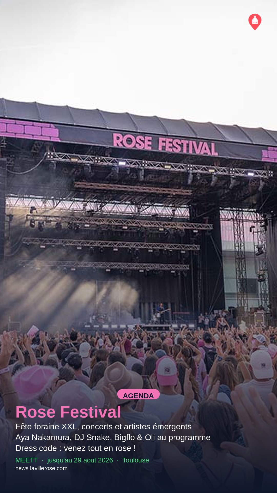
Rose Festival 2026 : 5e édition au Meett du 27 au 29 août
Modifier sur GitHub →
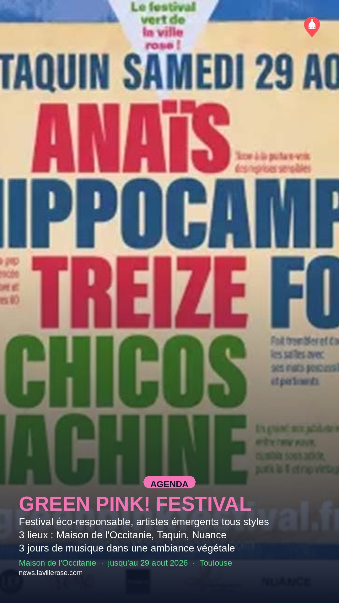
GREEN PINK! FESTIVAL : musique émergente et éco-responsable à Toulouse
Modifier sur GitHub →
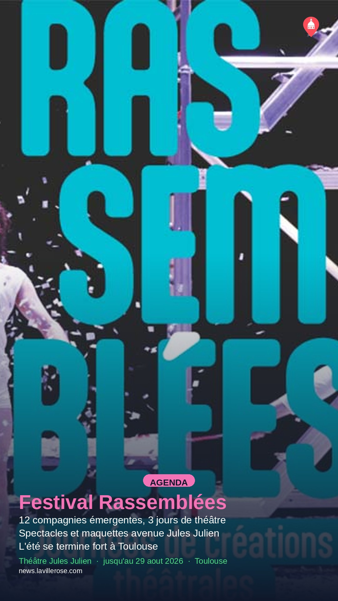
Festival Rassemblées : trois jours de théâtre émergent à Jules Julien
Modifier sur GitHub →
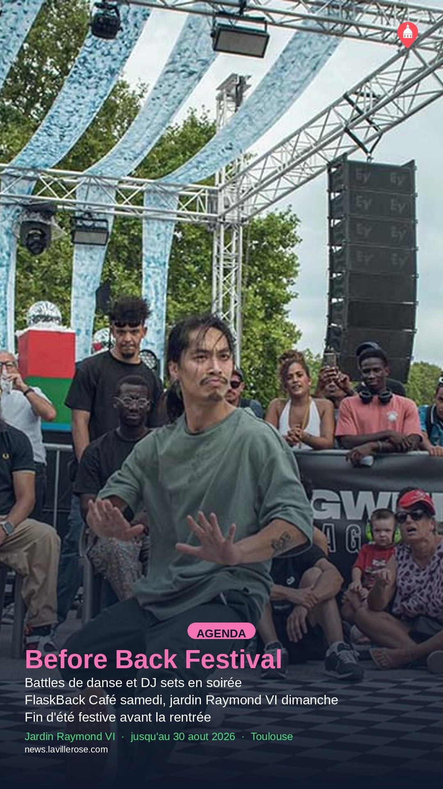
Before Back Festival : danse et musique sur deux soirées à Toulouse
Modifier sur GitHub →
À venir (29)
Événements déjà en base qui redeviendront éligibles à une Story sur une date future,
d'après leur planning actuel. Projection, pas une garantie : elle suppose qu'aucun
nouvel article n'arrive et que rien d'autre n'est publié entre-temps.
2026-08-30
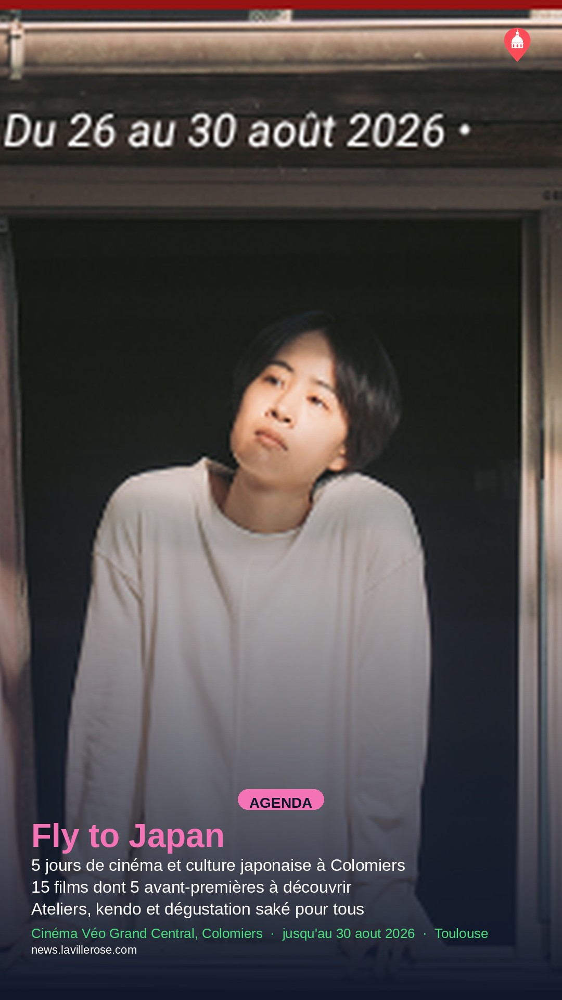
Le festival Fly to Japan revient à Colomiers du 26 au 30 août
jusqu'au 30 aout 2026
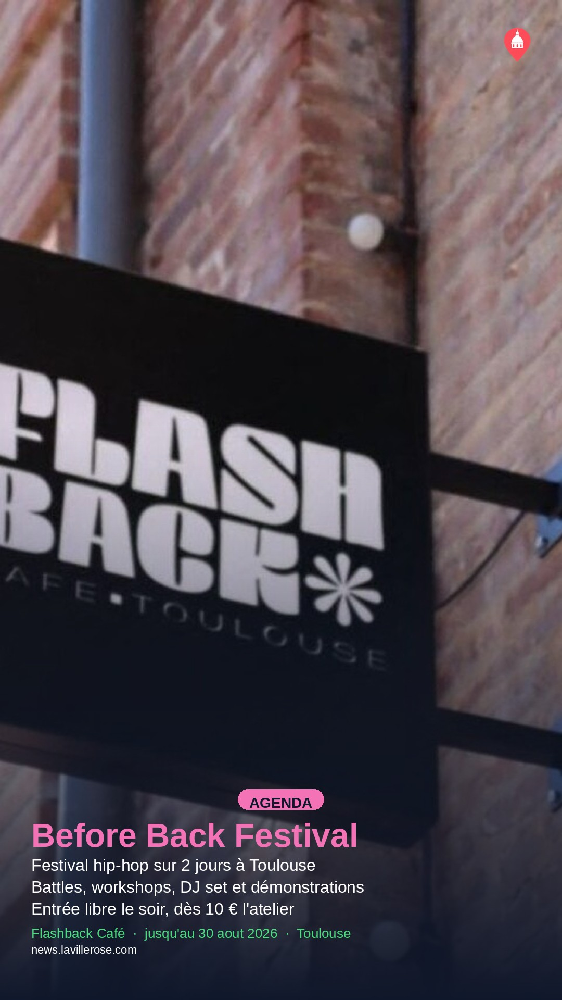
Le Before Back Festival revient pour sa troisième édition à Toulouse
jusqu'au 30 aout 2026
Before Back Festival : danse et musique sur deux soirées à Toulouse
jusqu'au 30 aout 2026
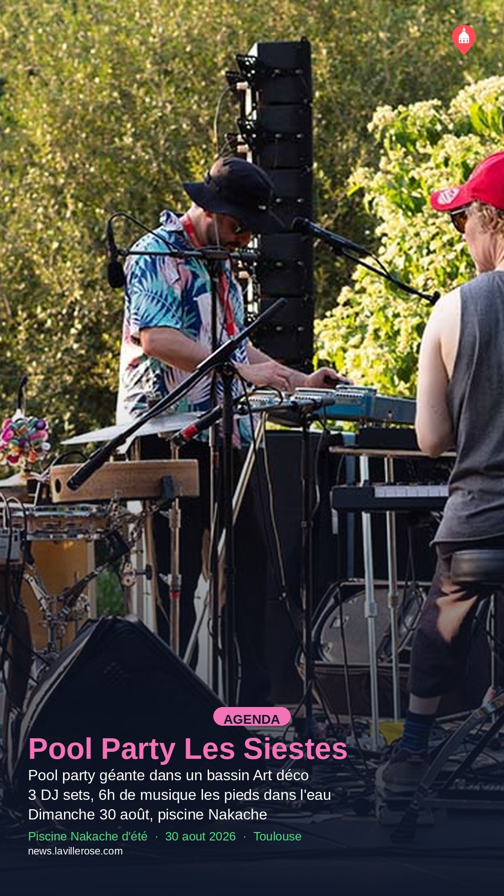
Les Siestes Électroniques organisent une pool party à la piscine Nakache
30 aout 2026

Pique-nique 100 % végan à la Prairie des filtres ce dimanche
30 aout 2026
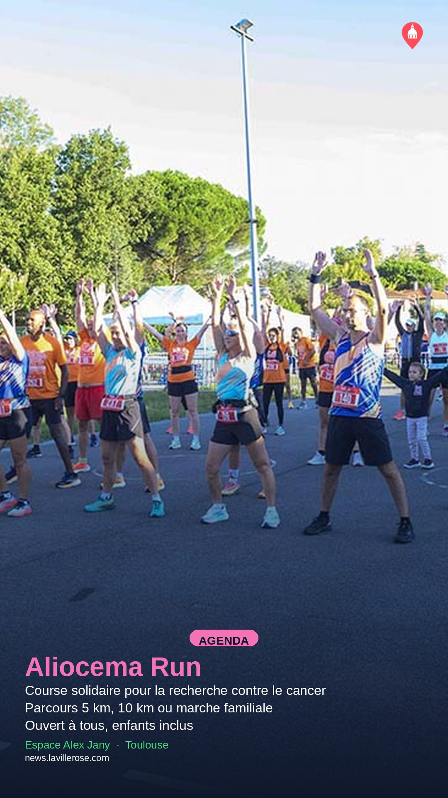
Aliocema Run : course solidaire contre le cancer du cerveau
30 aout 2026
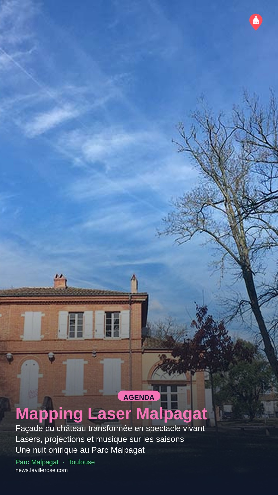
Show mapping laser sur le château du Parc Malpagat
30 aout 2026
2026-09-02

Le Stade Toulousain présente enfin le Bouclier de Brennus à Ernest-Wallon
2 septembre 2026
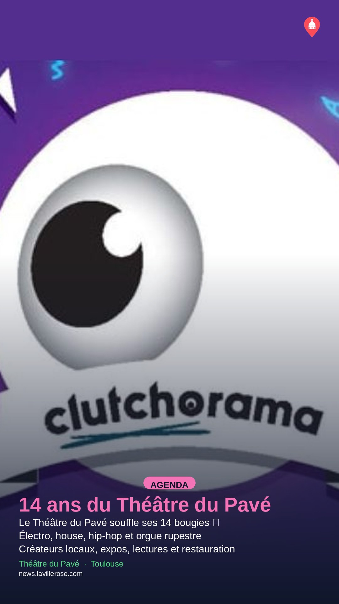
Le Théâtre du Pavé fête ses 14 ans avec musique et animations
2 septembre 2026
2026-09-03

La Grande Braderie de Toulouse envahit le centre-ville en septembre
du 3 au 5 septembre 2026
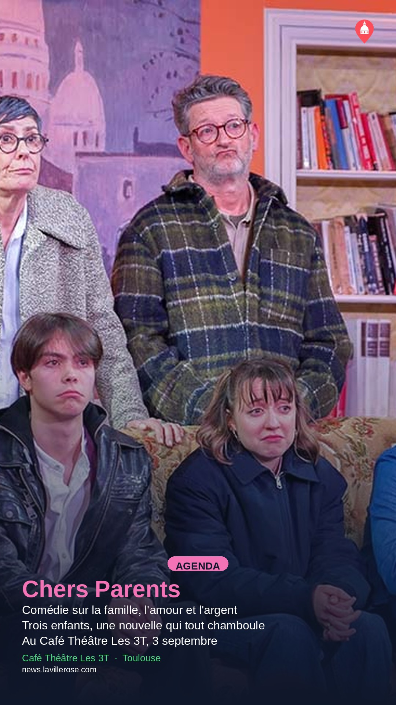
« Chers Parents », comédie familiale au Café Théâtre Les 3T
3 septembre 2026
2026-09-04
La Grande Braderie de Toulouse envahit le centre-ville en septembre
du 3 au 5 septembre 2026

Le Salon Auto-Moto Classic revient au MEETT avec 2 500 véhicules
du 4 au 6 septembre 2026

Brocante des Allées : 3 jours de chine allées François-Verdier
du 4 au 6 septembre 2026

Pétanque Days : tournoi et village festif à Toulouse
du 4 au 6 septembre 2026

À Vies Contraires : pièce feel good au Café Théâtre Les 3T
4 septembre 2026

Venise sous la neige : comédie au Café Théâtre Les 3T
4 septembre 2026

Le Duo Aether mêle jazz et classique à Saint-Pierre-des-Cuisines
4 septembre 2026
2026-09-05
La Grande Braderie de Toulouse envahit le centre-ville en septembre
du 3 au 5 septembre 2026
Le Salon Auto-Moto Classic revient au MEETT avec 2 500 véhicules
du 4 au 6 septembre 2026
Brocante des Allées : 3 jours de chine allées François-Verdier
du 4 au 6 septembre 2026
Pétanque Days : tournoi et village festif à Toulouse
du 4 au 6 septembre 2026
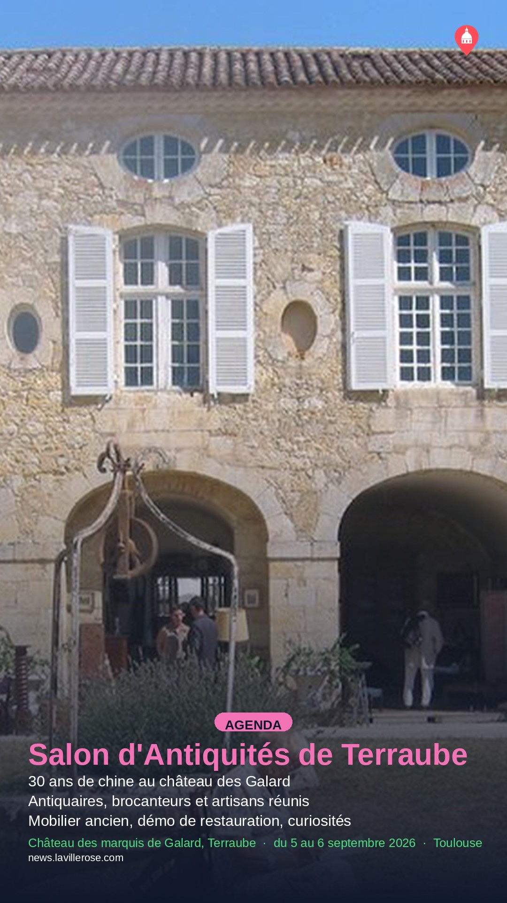
Le Salon d'Antiquités de Terraube revient au château des Galard
du 5 au 6 septembre 2026

Le Grand Banquet du cassoulet revient au Jardin du Grand Rond
du 5 au 6 septembre 2026

Visite guidée : l'histoire de l'eau à Toulouse
5 septembre 2026

Cordillera Jazz : musiques latinos et jazz au Jardin Raymond VI
5 septembre 2026
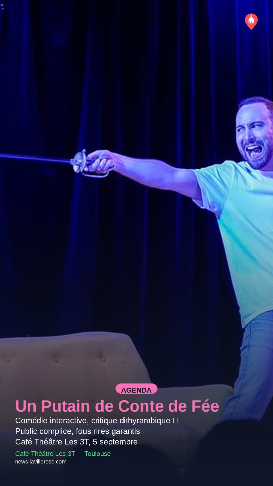
"Un Putain de Conte de Fée" : comédie décalée au Café Théâtre Les 3T
5 septembre 2026
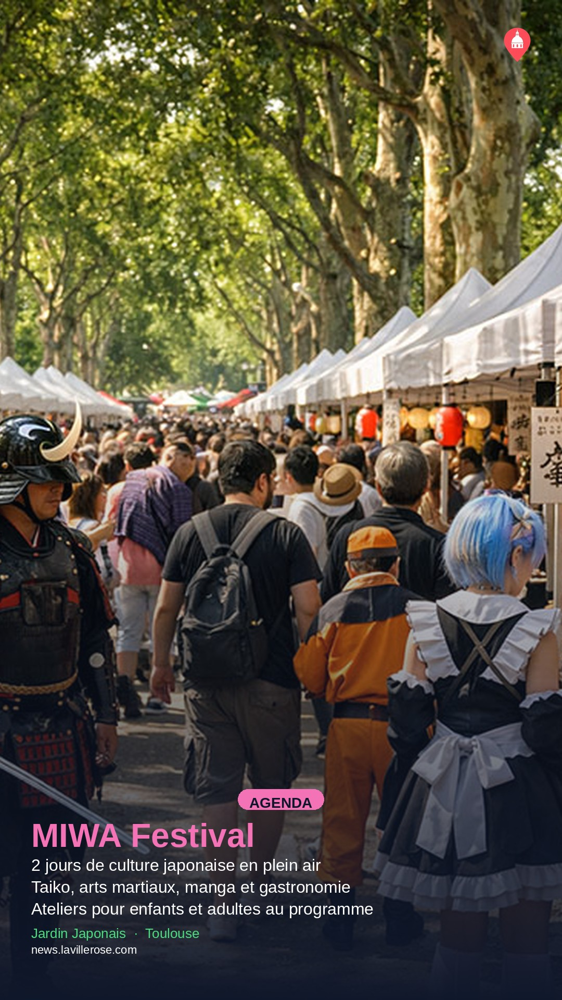
MIWA Festival : arts et cultures du Japon au Jardin Japonais
du 5 au 6 septembre 2026

Piano aux Jacobins 2026 : pianistes internationaux et jazz à Toulouse
du 8 au 30 septembre 2026